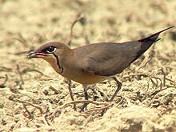
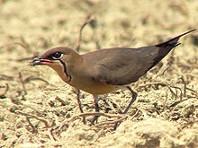

| Oriental Pratincole | |
|---|---|
|  | |
| Conservation status | |
| Binomial name | |
| Glareola maldivarum Forster, 1795 |
| Oriental Pratincole | |
|---|---|
|  | |
| Conservation status | |
| Binomial name | |
| Glareola maldivarum Forster, 1795 |
The Oriental Pratincole (Glareola maldivarum), also known as the Grasshopper-Bird or Swallow-Plover is a wader in the pratincole family, Glareolidae.
Their most unusual feature of the pratincoles is that although classed as waders they typically hunt their insect prey on the wing like swallows, although they can also feed on the ground.
These are birds of open country, and are often seen near water in the evening, hawking for insects. These pratincoles are found in warmer parts of south and east Asia, breeding from Northern Pakistan and the Kashmir region across into China and south west. Their 2-3 eggs are laid on the ground. They are migratory, wintering in both India and Pakistan, Indonesia and Australasia. They are rare north or west of the breeding range, but, amazingly, this species has occurred as far away as Great Britain more than once. The first record for the Western Palearctic was in Suffolk, England in June 1981.[2]
These birds have short legs, long pointed wings and long forked tails. They have short bills, which is an adaptation to aerial feeding. The back and head are brown, and the wings are brown with black flight feathers. The belly is white. The underwings are chestnut.
Very good views are needed to distinguish this species from other pratincoles, such as the very similar Collared Pratincole, which also has a chestnut underwing, and Black-winged Pratincole which shares the black upperwing flight feathers and lack of a white trailing edge to the wing. These features are not always readily seen in the field, especially as the chestnut underwing appears black unless excellent views are obtained.
On the 7th of February 2004, 2.5 million Oriental Pratincoles were recorded on Eighty Mile Beach in Australia's north-west by the Australasian Wader Studies Group. There had previously been no record of this magnitude and it is supposed that weather conditions caused much of the world's population of this species to congregate in one area.

{kind=link}
{kind=link}